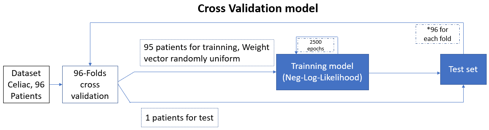

Leave 1 out Cross validation
Logistic Regression algorithm
Definitions
epochs epoch refers to one cycle through the full training dataset
learning rate learning rate is a tuning parameter in an optimization algorithm that determines the step size at each iteration while moving toward a minimum of a loss function.
threshold The output of a Logistic regression model is a probability. We can select a threshold value. If the probability is greater than this threshold value, the event is predicted to happen otherwise it is predicted not to happen.
kmers The length of snippet.
Note :
It is important to point out that it will take a long time to receive the results, as the code run on the local system, which is made up of 8 i5 cores of intell, supporting 8GB of physical memory. When we subsequently transfer the program to the more powerful laboratory servers with 64 cores, as well as 16GB of RAM.
Explanation of cross validation
Leave 1 out cross validation is a method which allows to check the efficiency of a model. The model is defined by the choice of the size of the snippets (kmers). You can choose a kmers of 4, 5, 6, or 7. During cross validation, among the patients of the dataset, we isolate a patient, and we train our model on the rest of the dataset as explained above. For example, for the Celiac disease dataset, we isolate a patient, and we train our model on the 95 other patients in the dataset. Then after having trained our model, we test it on the last isolated patient. We repeat this step for each patient, and check the results of the test (ie whether the isolated patient is sick or not). Thus, for the Celiac disease dataset, we train our model 96 times on 95 patients, and each time we test it on the isolated patient. And finally, we add up the results of all the tests, ie how many times we have predicted correctly when a patient is sick or not. Here is a graph to visually understand what we have just explained:
